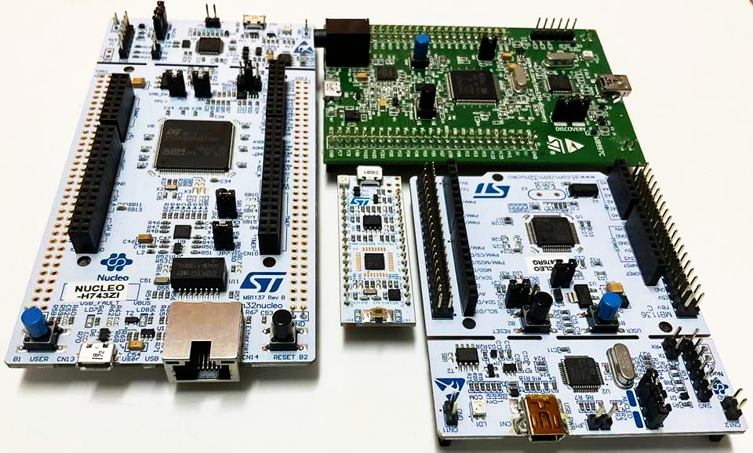
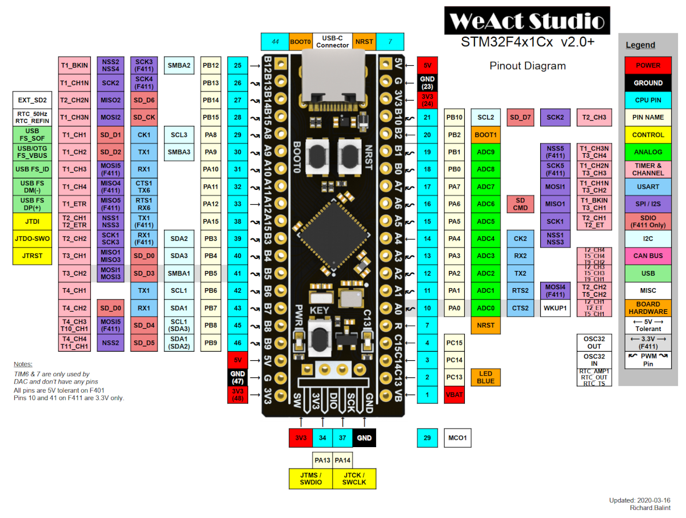
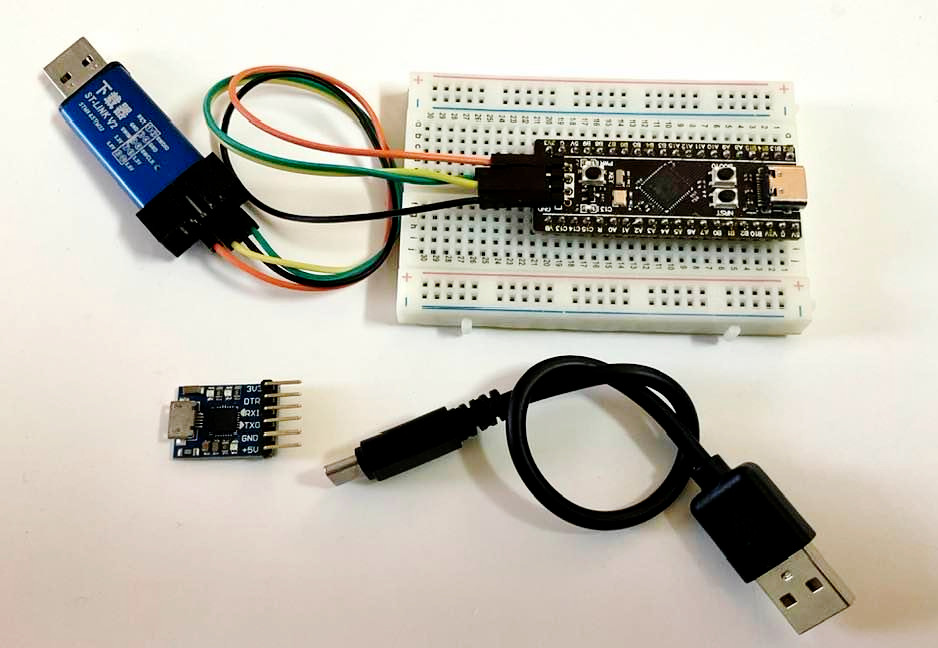

บอร์ด STM32F4x1 Black Pill#
Keywords: STM32F4, Black Pill Microcontroller Boards
▷ บอร์ดไมโครคอนโทรลเลอร์ STM32: ST NUCLEO#
โดยทั่วไปแล้ว ถ้าหากจะศึกษาเกี่ยวกับการเขียนโปรแกรมไมโครคอนโทรลเลอร์ตระกูล STM32 ของบริษัท STMicroelectronics ก็มีบอร์ดในกลุ่มที่เรียกว่า NUCLEO ให้เลือกใช้งานได้หลายรูปแบบ จำแนกได้เป็น 3 กลุ่มย่อย ตามจำนวนขา I/O ของบอร์ด
- Nucleo-32
- Nucleo-64
- Nucleo-144
บอร์ด NUCLEO มีวงจร ST-Link Programmer / Debugger รวมไว้บนบอร์ดแล้ว ทำให้มีความสะดวกในการใช้งาน เพียงเสียบสาย USB กับคอมพิวเตอร์ของผู้ใช้ ก็สามารถอัปโหลดโปรแกรมหรือไฟล์ .bin ไปยังบอร์ด NUCLEO เนื่องจากบอร์ดจะทำตัวให้มองเห็นเป็น USB Mass Storage (Mbed Drive) และรองรับการอัปโหลดไฟล์โปรแกรมแบบ Drag & Drop วงจร ST-Link ยังทำหน้าที่เป็น USB-to-Serial สำหรับชิปไมโครคอนโทรลเลอร์บนบอร์ดได้อีกด้วย
ข้อสังเกต: บอร์ด NUCLEO รองรับการเขียนโปรแกรมด้วย Arm Mbed OS
รูปภาพ: การเปรียบเทียบบอร์ด ST NUCLEO รุ่นต่าง ๆ (Source: STMicroelectronics)

รูปภาพ: ตัวอย่างบอร์ด STM32 NUCLEO-32/64/144 และ STM32F4 DISCOVERY
ดังนั้นหากมีงบประมาณเพียงพอและสามารถหาซื้อบอร์ด STM32 NUCLEO ได้ไม่ยาก ก็แนะนำให้ใช้งานบอร์ดประเภทนี้เป็นตัวเลือกแรก
▷ บอร์ดไมโครคอนโทรลเลอร์ STM32: Black Pill#
นอกจากบอร์ดไมโครคอนโทรลเลอร์ของบริษัท STMicroelectronics แล้ว ก็ยังมีตัวเลือกอื่นอีกมากให้เลือกใช้งาน บอร์ดที่มีราคาถูก ก็มักจะถูกผลิตในประเทศจีน
ในเอกสารนี้จะแนะนำบอร์ดไมโครคอนโทรลเลอร์ Mini-STM32F4x1 "Black Pill" ของ WeAct TC ซึ่งเป็นบริษัทในประเทศจีน
บอร์ดมีให้เลือกสองรุ่น จำแนกตามชิปที่ใช้ ดังนี้
- STM32F401CCU6 / STM32F401CEU6 Core Board: Arm Cortex-MF4, 84MHz, 256KB Flash, 64KB SRAM
- STM32F411CEU6 Core Board: Arm Cortex-MF4, 100MHz, 512KB Flash, 128KB SRAM
แต่ละรุ่นก็มีหลายเวอร์ชันของฮาร์ดแวร์ในการปรับปรุงแก้ไข เช่น v2.0 / v2.1 / v3.0 / v3.1 เป็นต้น

รูปภาพ: WeAct Black-Pill v2.0 PinOut
(Source: https://github.com/WeActTC/MiniF4-STM32F4x1/)
รูปภาพ: บอร์ด Black Pill (ยังไม่ได้บัดกรีขา Pin Headers) มุมมองด้านบนและด้านล่าง
จุดเด่นของบอร์ด Black Pill ได้แก่
- มีราคาไม่แพง โดยทั่วไปแล้ว ก็มีราคาถูกกว่า บอร์ด ST NUCLEO ที่ใช้ชิป STM32F4
- ตัวชิปไมโครคอนโทรลเลอร์ รองรับการทำงานแบบ Native USB มีคอนเนกเตอร์แบบ USB Type-C
- มีขาแบบ Male Pin Headers สองข้างของบอร์ด สามารถเสียบขาลงบนเบรดบอร์ดได้ จึงเหมาะกับการต่อวงจรแบบ Breadboard Prototyping
- มีเฟิร์มแวร์สำหรับการทำงานของ STM32 USB DFU Bootloader
ติดตั้งไว้ในหน่วยความจำ ROM แล้วจากโรงงงาน ดังนั้นจึงรองรับการอัปโหลดไฟล์เฟิร์มแวร์ผ่านทางพอร์ต
USB โดยไม่ต้องมีอุปกรณ์เสริมได้ เมื่อเข้าสู่โหมด Bootloader
ใช้เพียงสาย USB Type-C และใช้ร่วมกับโปรแกรมอย่างเช่น
dfu-utilหรือซอฟต์แวร์ STM32CubeProgrammer - บอร์ดนี้มีตัวสร้างสัญญาณ Clock จากภายนอก (External Crystal Osc.) ความถี่ 25MHz และความถี่ต่ำ 32.768kHz
- มีวงจร LED (Active-Low, Blue Color) อยู่บนบอร์ดและต่อกับขา
PC_13และมีวงจรปุ่มกด (KEY / USER_BUTTON) ต่อกับขาPA_0(แต่ไม่มี Pullup) - แม้ว่าบอร์ดนี้ไม่มีวงจร ST-Link Programmer / Debugger อยู่บนบอร์ด (อาจมองว่าเป็นข้อเสีย) ซึ่งแตกต่างจากกรณีของบอร์ด ST NUCLEO แต่มีคอนเนกเตอร์สำหรับเชื่อมต่อแบบ SWD (Serial Wire Debug) ซึ่งใช้เพียงสองขาสัญญาณ SWDIO & SWCLK และใช้เพื่อการอัปโหลดโปรแกรม หรือ ดีบักการทำงานของโปรแกรมในฮาร์ดแวร์ และจะต้องใช้งานร่วมกับอุปกรณ์ USB Debug Probe อย่างเช่น ST-Link/v2 หรือ DAP-Link / CMSIS-DAP เป็นต้น อุปกรณ์ประเภทนี้ที่มีราคาไม่แพง ก็มีให้เลือกใช้งานได้เช่นกัน
- มี 8-pin IC Socket (SOIC-8 SMD) ด้านล่างของบอร์ด เอาไว้สำหรับบัดกรีไอซีหน่วยความจำประเภท SPI Flash เช่น ไอซี W25Q128F ขนาด 128Mbits ในกรณีที่ต้องการใช้ MicroPython และเพิ่มพื้นที่ในการจัดเก็บไฟล์ใน External Flash
- ไฟล์ Schmematic สามารถดาวน์โหลดได้จาก https://github.com/WeActTC/MiniSTM32F4x1/tree/master/HDK
รูปภาพ: Black Pill - Board Layout (Top View)
ตัวอย่างการเชื่อมต่อระหว่างบอร์ด Black Pill และอุปกรณ์ ST-Link/V2 USB Dongle (clone) โดยใช้สายไฟ 4 เส้น และใช้ +3.3V จากอุปกรณ์นี้ ป้อนเป็นแรงดันไฟเลี้ยงให้บอร์ดไมโครคอนโทรลเลอร์ที่ขา VCC
STM32 (SWD) | ST-Link V2
GND <----> GND
SCK <----> SWCLK
DIO <----> SWDIO
3V3 <----> 3.3V
ข้อสังเกต: โดยทั่วไปแล้ว บอร์ด STM32 จะสามารถรับแรงดันไฟเลี้ยง +5V (เช่น จากคอนเนกเตอร์ USB หรือขา 5V) รับเข้ามาและมีวงจรแปลงให้เป็นแรงดันไฟเลี้ยง +3.3V (อย่าลืมตรวจสอบและทำความเข้าใจแผงวงจร หรือ Schematic File ของบอร์ดที่จะนำมาใช้งานด้วย)
รูปภาพ: การเชื่อมต่อระหว่างบอร์ด Black Pill และอุปกรณ์ ST-Link/V2 (clone)
รูปภาพ: แสดงตำแหน่งขาของคอนเนกเตอร์ที่ตัวอุปกรณ์ ST-Link/V2 (clone)
หากเปรียบเทียบกับบอร์ด BluePill หรือ Maple Mini ซึ่งเป็นบอร์ดไมโครคอนโทรลเลอร์ราคาถูกที่ใช้ชิป STM32F103C8T6 (Arm Cortex-M3) ก็อาจกล่าวได้ว่า Black Pill (Arm Cortex-M4F) เป็นตัวเลือกถัดไปที่มีความสามารถของตัวประมวลผลสูงขึ้น (มีความเร็วในการประมวลผล และความจุของหน่วยความจำ SRAM & Flash มากขึ้น)
รูปภาพ: Black Pill / Maple Mini / BluePill
โดยทั่วไปแล้ว ถ้าเลือกใช้บอร์ด STM32 แบบ Minimal ก็จะต้องมีอุปกรณ์ SWD Programmer / Debugger (เช่น ST-Link/V2 USB Dongle) และโมดูล USB-to-Serial (เช่น ชิป CP210x / CH34x / FT232R / CH552 เป็นต้น) เพื่อรับส่งข้อมูลผ่านทาง Hardware Serial ที่ขา Tx/Rx ของชิปไมโครคอนโทรลเลอร์ แต่ถ้าชิปไมโครคอนโทรลเลอร์รองรับการใช้งาน Native USB ก็อาจไม่จำเป็นต้องใช้อุปกรณ์หรือโมดูล USB-to-Serial

รูปภาพ: บอร์ด Black Pill + อุปกรณ์ ST-Link/V2 (clone) + โมดูล CP2104 (USB-to-Serial)
▷ ตัวเลือกสำหรับการเขียนโปรแกรม STM32#
การเขียนโปรแกรมสำหรับบอร์ดไมโครคอนโทรลเลอร์ STM32 (เช่น STM32F4 Series) สำหรับงานด้านระบบสมองกลฝังตัว ก็มีอยู่หลายวิธี ยกตัวอย่างเช่น
- C/C++
- STM32F4 HAL ใช้ร่วมกับ STM32CubeIDE หรือ Keil MDK + uVision IDE
- Arduino Core for STM32 ใช้ร่วมกับ Arduino IDE หรือ VS Code + PlatformIO
- Mbed OS ใช้ร่วมกับ Mbed Studio IDE หรือ VS Code + PlatformIO
- MicroPython หรือ CircuitPython ใช้ร่วมกับ Thonny IDE
- Microsoft MakeCode Arcade สำหรับเขียนโปรแกรมด้วยภาษา Static TypeScript (STS) หรือ Block-based Coding เพื่อสร้างอุปกรณ์ Arcade Game Console เช่น ใช้ชิป STM32F411 เป็นตัวประมวลผลหลัก
- ภาษาคอมพิวเตอร์อื่น เช่น TinyGo และ Embedded Rust
▷ กล่าวสรุป#
บอร์ดไมโครคอนโทรลเลอร์ STM32 มีให้เลือกหลายรุ่นและหลายแบบ ทั้งของบริษัทผู้ผลิตชิปเอง (STMicroelectronics) และผู้ผลิตรายอื่นที่แตกต่างกันไป เอกสารนี้ได้กล่าวถึงข้อดี และข้อจำกัดของบอร์ด Black Pill ซึ่งใช้ชิป STM32F401 / F411CEU6 และมีราคาไม่แพง (หาซื้อได้ในราคาต่ำกว่า 300 THB) เหมาะสำหรับผู้เริ่มต้นและมีงบจำกัด
This work is licensed under a Creative Commons Attribution-ShareAlike 4.0 International License.
Created: 2021-12-05 | Last Updated: 2021-12-05